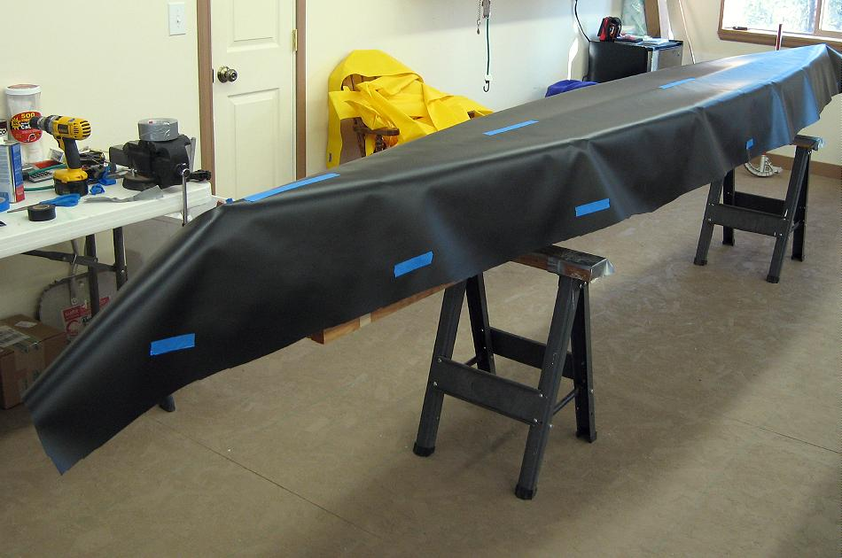

| Sonnet ( Hull Skin) | Menu Previous Page Next Page |
|

After trimming, mark the top of the gunwales with tape to determine the area to be glued. Tape is placed along the keel to insure that the skin doesn't move and to insure that the skin, when reversed again, will line up properly when viewed from under the skinning frame. Also mark the ends of the sponson sleeves (not shown).
|
|